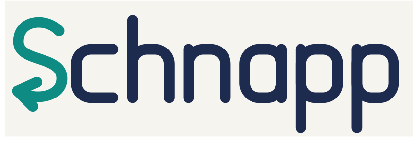
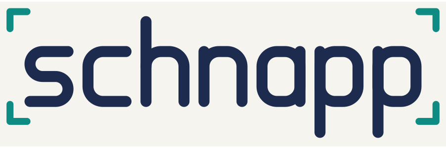
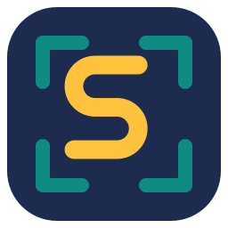
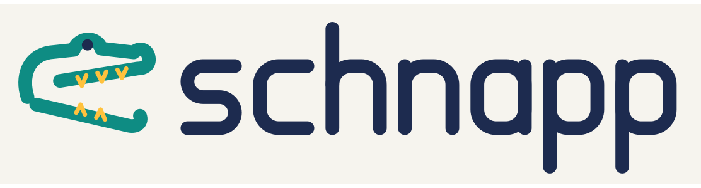
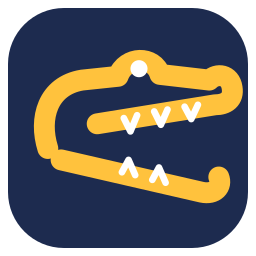

Schriftzug selbst gezeichnet: Monoline, runde Enden, Bögen als abgerundete Rechtecke (wie ein Auswahlrahmen).
Farben: Nachtblau für die Schrift, Petrol für das Bildzeichen, Markergelb als Akzent. Quelle:
marke/werkzeug/runde1.py.
Das S ist ein gebogener Pfeil: die Kernfunktion (Pfeile ziehen und biegen) steckt im Anfangsbuchstaben.

Vier Ecken wie beim Aufziehen eines Bereichs. Ruhig, eindeutig „Bildschirmfoto“, auch klein lesbar.


Ein Krokodilkopf, der zuschnappt — „schnapp!“ wörtlich. Freundlich, merkfähig; als Maskottchen für Doku und Leerzustände ausbaufähig. Klein weniger klar als A und B.

